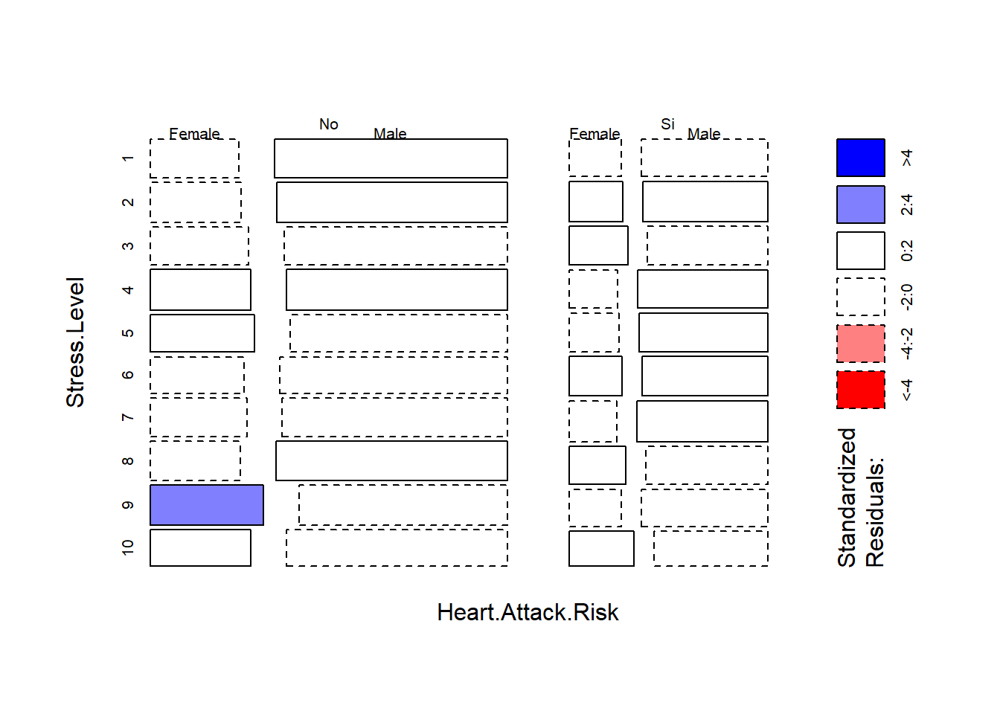
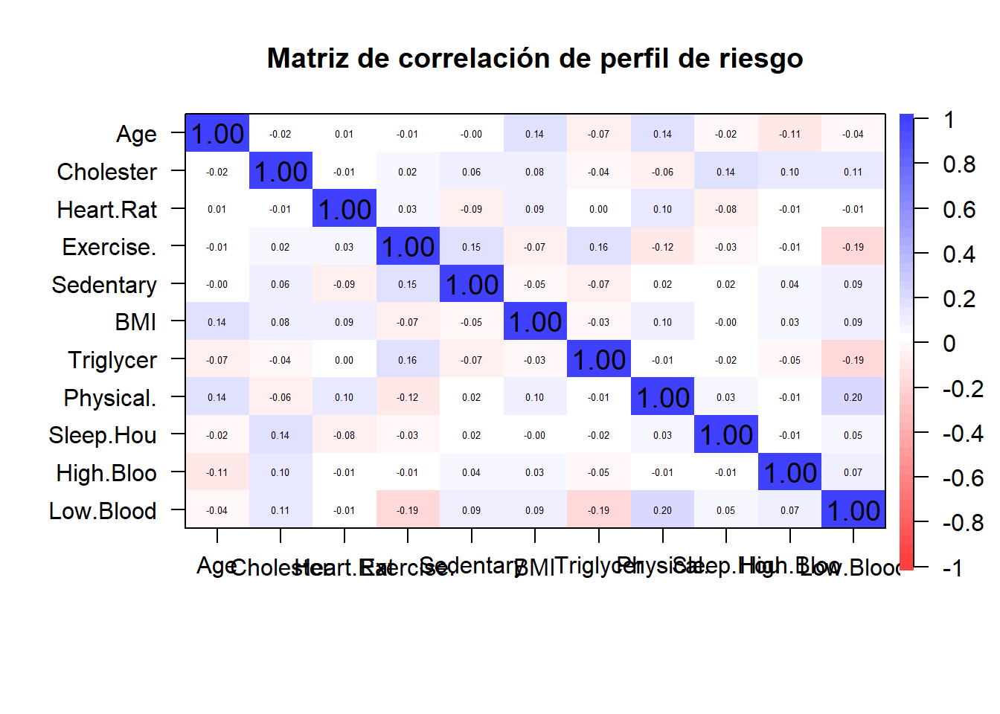

library(tidyverse)
library(dplyr)Entrega 3 Análisis de Datos
Cargamos la librería
Convertir los datos en tidy
Cargamos la tabla de datos
datos = read.csv("heart_attack_prediction_dataset.csv", header = T)
datos = datos %>% as.tibble
str(datos)tibble [8,763 × 26] (S3: tbl_df/tbl/data.frame)
$ Patient.ID : chr [1:8763] "BMW7812" "CZE1114" "BNI9906" "JLN3497" ...
$ Age : int [1:8763] 67 21 21 84 66 54 90 84 20 43 ...
$ Sex : chr [1:8763] "Male" "Male" "Female" "Male" ...
$ Cholesterol : int [1:8763] 208 389 324 383 318 297 358 220 145 248 ...
$ Blood.Pressure : chr [1:8763] "158/88" "165/93" "174/99" "163/100" ...
$ Heart.Rate : int [1:8763] 72 98 72 73 93 48 84 107 68 55 ...
$ Diabetes : int [1:8763] 0 1 1 1 1 1 0 0 1 0 ...
$ Family.History : int [1:8763] 0 1 0 1 1 1 0 0 0 1 ...
$ Smoking : int [1:8763] 1 1 0 1 1 1 1 1 1 1 ...
$ Obesity : int [1:8763] 0 1 0 0 1 0 0 1 1 1 ...
$ Alcohol.Consumption : int [1:8763] 0 1 0 1 0 1 1 1 0 1 ...
$ Exercise.Hours.Per.Week : num [1:8763] 4.17 1.81 2.08 9.83 5.8 ...
$ Diet : chr [1:8763] "Average" "Unhealthy" "Healthy" "Average" ...
$ Previous.Heart.Problems : int [1:8763] 0 1 1 1 1 1 0 0 0 0 ...
$ Medication.Use : int [1:8763] 0 0 1 0 0 1 0 1 0 0 ...
$ Stress.Level : int [1:8763] 9 1 9 9 6 2 7 4 5 4 ...
$ Sedentary.Hours.Per.Day : num [1:8763] 6.62 4.96 9.46 7.65 1.51 ...
$ Income : int [1:8763] 261404 285768 235282 125640 160555 241339 190450 122093 25086 209703 ...
$ BMI : num [1:8763] 31.3 27.2 28.2 36.5 21.8 ...
$ Triglycerides : int [1:8763] 286 235 587 378 231 795 284 370 790 232 ...
$ Physical.Activity.Days.Per.Week: int [1:8763] 0 1 4 3 1 5 4 6 7 7 ...
$ Sleep.Hours.Per.Day : int [1:8763] 6 7 4 4 5 10 10 7 4 7 ...
$ Country : chr [1:8763] "Argentina" "Canada" "France" "Canada" ...
$ Continent : chr [1:8763] "South America" "North America" "Europe" "North America" ...
$ Hemisphere : chr [1:8763] "Southern Hemisphere" "Northern Hemisphere" "Northern Hemisphere" "Northern Hemisphere" ...
$ Heart.Attack.Risk : int [1:8763] 0 0 0 0 0 1 1 1 0 0 ...Vamos a modificar el data set para que sea más cómodo a la hora de trabajar con él:
datos = datos %>%
mutate(Patient.ID = c(1:8763))
datos = datos %>%
mutate(Sex = Sex %>% as.factor)
datos = datos %>%
mutate(Diet = Diet %>% as.factor)
datos = datos %>%
mutate(Country = Country %>% as.factor)
datos = datos %>%
mutate(Continent = Continent %>% as.factor)
datos = datos %>%
mutate(Hemisphere = Hemisphere %>% as.factor)
datos = datos %>%
mutate(Diabetes = if_else(Diabetes == 0, "No", "Si") %>% as.factor)
datos = datos %>%
mutate(Family.History = if_else(Family.History == 0, "No", "Si") %>% as.factor)
datos = datos %>%
mutate(Smoking = if_else(Smoking == 0, "No", "Si") %>% as.factor)
datos = datos %>%
mutate(Obesity = if_else(Obesity == 0, "No", "Si") %>% as.factor)
datos = datos %>%
mutate(Alcohol.Consumption = if_else(Alcohol.Consumption == 0, "No", "Si") %>% as.factor)
datos = datos %>%
mutate(Previous.Heart.Problems = if_else(Previous.Heart.Problems == 0, "No", "Si") %>% as.factor)
datos = datos %>%
mutate(Medication.Use = if_else(Medication.Use == 0, "No", "Si") %>% as.factor)
datos = datos %>%
mutate(Heart.Attack.Risk = if_else(Heart.Attack.Risk == 0, "No", "Si") %>% as.factor)
# vamos a convertir la columna blood.pressure en high y low
datos <- datos %>%
rowwise() %>%
mutate(
High.Blood.Pressure = as.numeric(unlist(strsplit(Blood.Pressure, "/"))[1]),
Low.Blood.Pressure = as.numeric(unlist(strsplit(Blood.Pressure, "/"))[2])
) %>%
ungroup()
datos <- datos[,c(-5,-18)]
str(datos)tibble [8,763 × 26] (S3: tbl_df/tbl/data.frame)
$ Patient.ID : int [1:8763] 1 2 3 4 5 6 7 8 9 10 ...
$ Age : int [1:8763] 67 21 21 84 66 54 90 84 20 43 ...
$ Sex : Factor w/ 2 levels "Female","Male": 2 2 1 2 2 1 2 2 2 1 ...
$ Cholesterol : int [1:8763] 208 389 324 383 318 297 358 220 145 248 ...
$ Heart.Rate : int [1:8763] 72 98 72 73 93 48 84 107 68 55 ...
$ Diabetes : Factor w/ 2 levels "No","Si": 1 2 2 2 2 2 1 1 2 1 ...
$ Family.History : Factor w/ 2 levels "No","Si": 1 2 1 2 2 2 1 1 1 2 ...
$ Smoking : Factor w/ 2 levels "No","Si": 2 2 1 2 2 2 2 2 2 2 ...
$ Obesity : Factor w/ 2 levels "No","Si": 1 2 1 1 2 1 1 2 2 2 ...
$ Alcohol.Consumption : Factor w/ 2 levels "No","Si": 1 2 1 2 1 2 2 2 1 2 ...
$ Exercise.Hours.Per.Week : num [1:8763] 4.17 1.81 2.08 9.83 5.8 ...
$ Diet : Factor w/ 3 levels "Average","Healthy",..: 1 3 2 1 3 3 2 1 1 3 ...
$ Previous.Heart.Problems : Factor w/ 2 levels "No","Si": 1 2 2 2 2 2 1 1 1 1 ...
$ Medication.Use : Factor w/ 2 levels "No","Si": 1 1 2 1 1 2 1 2 1 1 ...
$ Stress.Level : int [1:8763] 9 1 9 9 6 2 7 4 5 4 ...
$ Sedentary.Hours.Per.Day : num [1:8763] 6.62 4.96 9.46 7.65 1.51 ...
$ BMI : num [1:8763] 31.3 27.2 28.2 36.5 21.8 ...
$ Triglycerides : int [1:8763] 286 235 587 378 231 795 284 370 790 232 ...
$ Physical.Activity.Days.Per.Week: int [1:8763] 0 1 4 3 1 5 4 6 7 7 ...
$ Sleep.Hours.Per.Day : int [1:8763] 6 7 4 4 5 10 10 7 4 7 ...
$ Country : Factor w/ 20 levels "Argentina","Australia",..: 1 4 7 4 17 8 4 11 3 11 ...
$ Continent : Factor w/ 6 levels "Africa","Asia",..: 6 5 4 5 2 4 5 2 6 2 ...
$ Hemisphere : Factor w/ 2 levels "Northern Hemisphere",..: 2 1 1 1 1 1 1 1 2 1 ...
$ Heart.Attack.Risk : Factor w/ 2 levels "No","Si": 1 1 1 1 1 2 2 2 1 1 ...
$ High.Blood.Pressure : num [1:8763] 158 165 174 163 91 172 102 131 144 160 ...
$ Low.Blood.Pressure : num [1:8763] 88 93 99 100 88 86 73 68 105 70 ...Reordenamos las columnas
datos <- datos %>%
relocate(where(is.factor)) %>%
relocate(Patient.ID)
view(datos)
# 1 id
# 2-14 qual
# 15-26 quant| qualitat | Quantit |
|---|---|
| Sex, Diabetes, Family.History, Smoking, Obesity, Alcohol.Consumption, Diet, Previous.Heart.Problems, Medication.Use, Country, Continent, Hemisphere, Heart.Attack.Risk | Age, Cholesterol, Heart.Rate, Exercise.Hours.Per.Week, Stress.Level, Sedentary.Hours.Per.Day, BMI, Triglycerides, Physical.Activity.Days.Per.Week, Sleep.Hours.Per.Day, High.Blood.Pressure, Low.Blood.Pressure |
summary(datos) Patient.ID Sex Diabetes Family.History Smoking Obesity
Min. : 1 Female:2652 No:3047 No:4443 No: 904 No:4369
1st Qu.:2192 Male :6111 Si:5716 Si:4320 Si:7859 Si:4394
Median :4382
Mean :4382
3rd Qu.:6572
Max. :8763
Alcohol.Consumption Diet Previous.Heart.Problems Medication.Use
No:3522 Average :2912 No:4418 No:4396
Si:5241 Healthy :2960 Si:4345 Si:4367
Unhealthy:2891
Country Continent Hemisphere
Germany : 477 Africa : 873 Northern Hemisphere:5660
Argentina : 471 Asia :2543 Southern Hemisphere:3103
Brazil : 462 Australia : 884
United Kingdom: 457 Europe :2241
Australia : 449 North America: 860
Nigeria : 448 South America:1362
(Other) :5999
Heart.Attack.Risk Age Cholesterol Heart.Rate
No:5624 Min. :18.00 Min. :120.0 Min. : 40.00
Si:3139 1st Qu.:35.00 1st Qu.:192.0 1st Qu.: 57.00
Median :54.00 Median :259.0 Median : 75.00
Mean :53.71 Mean :259.9 Mean : 75.02
3rd Qu.:72.00 3rd Qu.:330.0 3rd Qu.: 93.00
Max. :90.00 Max. :400.0 Max. :110.00
Exercise.Hours.Per.Week Stress.Level Sedentary.Hours.Per.Day
Min. : 0.002442 Min. : 1.00 Min. : 0.001263
1st Qu.: 4.981579 1st Qu.: 3.00 1st Qu.: 2.998794
Median :10.069559 Median : 5.00 Median : 5.933622
Mean :10.014284 Mean : 5.47 Mean : 5.993690
3rd Qu.:15.050018 3rd Qu.: 8.00 3rd Qu.: 9.019124
Max. :19.998709 Max. :10.00 Max. :11.999313
BMI Triglycerides Physical.Activity.Days.Per.Week
Min. :18.00 Min. : 30.0 Min. :0.00
1st Qu.:23.42 1st Qu.:225.5 1st Qu.:2.00
Median :28.77 Median :417.0 Median :3.00
Mean :28.89 Mean :417.7 Mean :3.49
3rd Qu.:34.32 3rd Qu.:612.0 3rd Qu.:5.00
Max. :40.00 Max. :800.0 Max. :7.00
Sleep.Hours.Per.Day High.Blood.Pressure Low.Blood.Pressure
Min. : 4.000 Min. : 90.0 Min. : 60.00
1st Qu.: 5.000 1st Qu.:112.0 1st Qu.: 72.00
Median : 7.000 Median :135.0 Median : 85.00
Mean : 7.024 Mean :135.1 Mean : 85.16
3rd Qu.: 9.000 3rd Qu.:158.0 3rd Qu.: 98.00
Max. :10.000 Max. :180.0 Max. :110.00
Análisis multivariante exploratorio
a = datos %>%
select(2,6,12,14,15,16,17) %>%
na.omit
pairs(a, col = c("red", "blue", "green", "yellow", "purple", "orange")[as.integer(a$Continent)],pch=18)
library(GGally)Registered S3 method overwritten by 'GGally':
method from
+.gg ggplot2ggpairs(a)`stat_bin()` using `bins = 30`. Pick better value with `binwidth`.`stat_bin()` using `bins = 30`. Pick better value with `binwidth`.
`stat_bin()` using `bins = 30`. Pick better value with `binwidth`.
`stat_bin()` using `bins = 30`. Pick better value with `binwidth`.
`stat_bin()` using `bins = 30`. Pick better value with `binwidth`.
`stat_bin()` using `bins = 30`. Pick better value with `binwidth`.
`stat_bin()` using `bins = 30`. Pick better value with `binwidth`.
`stat_bin()` using `bins = 30`. Pick better value with `binwidth`.
`stat_bin()` using `bins = 30`. Pick better value with `binwidth`.
`stat_bin()` using `bins = 30`. Pick better value with `binwidth`.
`stat_bin()` using `bins = 30`. Pick better value with `binwidth`.
`stat_bin()` using `bins = 30`. Pick better value with `binwidth`.
Estimación del vector de medias y la matriz de covarianza y correlación
Calculemos el vector de medias. Para cada variable cuantitativa
apply(datos[,15:26], FUN = mean, MARGIN = 2) Age Cholesterol
53.707977 259.877211
Heart.Rate Exercise.Hours.Per.Week
75.021682 10.014284
Stress.Level Sedentary.Hours.Per.Day
5.469702 5.993690
BMI Triglycerides
28.891446 417.677051
Physical.Activity.Days.Per.Week Sleep.Hours.Per.Day
3.489672 7.023508
High.Blood.Pressure Low.Blood.Pressure
135.075659 85.156111 Veamos ahora la matriz de covariancia (a secas)
new_names = substr(names(datos[,c(15:26)]),1,5)
datos_quant <- datos[,c(15:26)]
colnames(datos_quant) = new_names
n = length(datos$Patient.ID)
round(cov(datos_quant)*(n-1)/n,5) Age Chole Heart Exerc Stres Seden BMI
Age 451.49010 -15.64684 -1.67848 0.14816 1.11229 1.27268 -0.35068
Chole -15.64684 6538.12323 0.52326 10.06226 -5.66171 5.30115 8.83496
Heart -1.67848 0.52326 422.29326 0.98362 -0.26717 -0.72882 0.68802
Exerc 0.14816 10.06226 0.98362 33.44789 -0.15053 0.17552 0.13803
Stres 1.11229 -5.66171 -0.26717 -0.15053 8.17650 -0.05349 -0.05873
Seden 1.27268 5.30115 -0.72882 0.17552 -0.05349 12.01427 -0.00052
BMI -0.35068 8.83496 0.68802 0.13803 -0.05873 -0.00052 39.92750
Trigl 16.23469 -98.66296 56.29298 2.22165 -2.50870 -4.48598 -8.43101
Physi 0.06711 2.96336 0.03914 0.10198 0.04833 -0.04888 0.11698
Sleep -0.09230 0.71645 0.07401 -0.01432 -0.08077 0.03303 -0.12602
High. 1.71889 0.28271 4.59256 -1.44850 1.34470 0.30984 0.71242
Low.B -3.06396 2.47221 -5.46259 -0.29442 -0.35439 -0.33604 0.07470
Trigl Physi Sleep High. Low.B
Age 16.23469 0.06711 -0.09230 1.71889 -3.06396
Chole -98.66296 2.96336 0.71645 0.28271 2.47221
Heart 56.29298 0.03914 0.07401 4.59256 -5.46259
Exerc 2.22165 0.10198 -0.01432 -1.44850 -0.29442
Stres -2.50870 0.04833 -0.08077 1.34470 -0.35439
Seden -4.48598 -0.04888 0.03303 0.30984 -0.33604
BMI -8.43101 0.11698 -0.12602 0.71242 0.07470
Trigl 50057.51570 -3.85898 -12.99720 30.18694 1.78920
Physi -3.85898 5.21007 0.06369 -0.45551 0.54583
Sleep -12.99720 0.06369 3.95357 -0.24245 0.31163
High. 30.18694 -0.45551 -0.24245 694.24202 5.15719
Low.B 1.78920 0.54583 0.31163 5.15719 215.37698library(psych)Warning: package 'psych' was built under R version 4.2.3
Attaching package: 'psych'The following objects are masked from 'package:ggplot2':
%+%, alphacorPlot(datos_quant, cex = 0.8, main = "Matriz de correlación")Separemos las variables en función de diferentes edades, ya que no hemos observado ningua correlación, ni ninguna dependencia. Nosotros suponemos que la edad sí que es un factor clave a la hora de ser un individuo de riesgo
Vamos a dividir los individuos de
datos_menores_30 <- datos %>%
filter(Age < 30) %>%
select(15:26)
colnames(datos_menores_30)=new_names
corPlot(datos_menores_30, cex = 0.8, main = "Matriz de correlación de individuos menores de 30 años")datos_30_40 <- datos %>%
filter(Age >= 30) %>%
filter(Age < 40) %>%
select(15:26)
colnames(datos_30_40)=new_names
corPlot(datos_30_40, cex = 0.8, main = "Matriz de correlación de individuos de entre 30 y 40 años")
datos_40_50 <- datos %>%
filter(Age >= 40) %>%
filter(Age < 50) %>%
select(15:26)
colnames(datos_40_50)=new_names
corPlot(datos_40_50, cex = 0.8, main = "Matriz de correlación de individuos de entre 40 y 50 años")
datos_50_60 <- datos %>%
filter(Age >= 50) %>%
filter(Age < 60) %>%
select(15:26)
colnames(datos_50_60)=new_names
corPlot(datos_50_60, cex = 0.8, main = "Matriz de correlación de individuos de entre 50 y 60 años")
datos_60_70 <- datos %>%
filter(Age >= 60) %>%
filter(Age < 70) %>%
select(15:26)
colnames(datos_60_70)=new_names
corPlot(datos_60_70, cex = 0.8, main = "Matriz de correlación de individuos de entre 60 y 70 años")
datos_70_80 <- datos %>%
filter(Age >= 70) %>%
filter(Age < 80) %>%
select(15:26)
colnames(datos_70_80)=new_names
corPlot(datos_70_80, cex = 0.8, main = "Matriz de correlación de individuos de entre 70 y 80 años")
datos_80_90 <- datos %>%
filter(Age >= 80) %>%
filter(Age <= 90) %>%
select(15:26)
colnames(datos_80_90)=new_names
corPlot(datos_80_90, cex = 0.8, main = "Matriz de correlación de individuos de entre 80 y 90 años")
datos_adultos <- datos %>%
filter(Age >= 30) %>%
filter(Age <= 60) %>%
select(15:26)
colnames(datos_adultos)=new_names
corPlot(datos_adultos, cex = 0.8, main = "Matriz de correlación de individuos de entre 30 y 60 años")Notemos que no hay mucha diferencia entre la edad de los individuos.
#prop.table(table(datos_30_40$Heart.Attack.Risk))Veamos si hay diferencias entre los continentes en los que habitan:
table(datos$Continent)
datos_Africa <- datos %>%
filter(Continent == "Africa") %>%
select(15:26)
colnames(datos_70_80)=new_names
corPlot(datos_70_80, cex = 0.8, main = "Matriz de correlación de individuos de entre 70 y 80 años")Objetivo del estudio
- Estudiar algunos perfiles con riesgo de padecer un ataque al corazón
- Comprobar si hay diferencias entre diferentes continentes respecto al mismo perfil de riesgo.
- Poder predecir si un individuo tiene riesgo de sufrir un ataque al corazón.